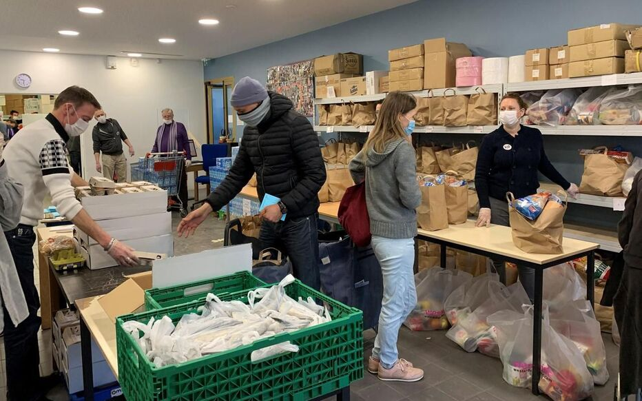

Association Project

I've also been able to carry out a number of community projects outside school, for my own personal use. In particular, my active participation in the "Restos du Cœur" association.
My participation took place on several levels:
- Firstly, I was able to help out with the French collection drive in the stores. The aim was to stand at the entrance to supermarkets and ask people to donate food for people in need.
- I was also able to help distribute products to people who come to the “Restos du Cœur”. Thanks to this, I was able to understand the daily life of these people who are in need, either
because of money, or because they are refugees who have come to France particularly as a result of the war. I was able to help them, for example, by distributing food, talking with them
to understand their very complicated daily lives, playing and entertaining their children, and so on.
- Finally, I was also able to take part in French classes given by volunteers to help people learn French so that they can better integrate into society.
It was a very enriching experience, both humanly and professionally, to be able to help people beyond the technical aspect.